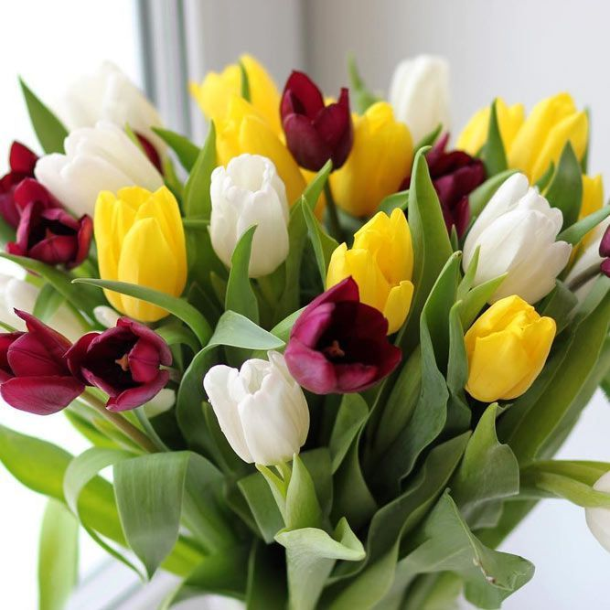

(lat. Tulipa) ili lala, je rod od oko 150 biljaka u porodici ljiljana (Liliaceae).
Područje odakle potiču vrste uključuje jug Europe, sjever Afrike, te Aziju, tj. područja Anatolije i Irana, a najveći broj vrsta potječe
iz stepa Kazahstana i okoline planina Pamira i Hindukuša.
Danas je većina vrsta uzgojena križanjem, a većina dolazi od vrste Tulipa gesneriana.
Tulipan je biljka koja ima lukovicu (geofita) koja je kruškolikog oblika, zaobljena s jedne strane, a s druge spljoštena.
Dobio je ime posredstvom turskog naziva tülbent koji se temelji na persijskoj riječi turban. Iz lukovice raste niska biljka, visine između 10 i 70 cm.
Najčešće ima 2-6 listova (pojedine vrste imaju do 12 listova), zelene ili blijedozelene boje, dosta širokih.
Cvjetna stabljika je krhka, na kraju se nalazi kupasti, zdjelasti, resasti ili zvjezdasti cvijet. Cvjetovi su veliki i rastu na vrhu stabljike.
Uobičajeno je da jedan cvijet raste na jednoj stabljici, premda postoje vrste koje imaju i do 4 cvijeta na jednoj stabljici.
Tulipomanija
Tulipan je nekada bio najskuplji cvijet. U sedamnaestom vijeku koštao je deset puta više od prosječne zarade u Holandiji, a to ga je činilo
vrednijim i skupljim od određenih kuća.Vremenski period kada su lukovice tulipana bile basnoslovno skupe (od 1634. do 1637. godine) poznat je pod
nazivom “tulipomanija”.Holandija je najveći komercijalni proizvođač tulipana na svijetu te godišnje izveze preko tri milijarde tulipana.